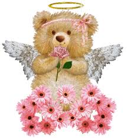

A teddy bear is a soft toy in the form of a bear. Developed apparently simultaneously by toymakers Morris Michtom in the U.S. and Richard Steiff in Germany in the early years of the 20th century, and named after President Theodore "Teddy"
Roosevelt, the teddy bear became an iconic children's toy, celebrated in story, song, and film.Since the creation of the first teddy bears which sought to imitate the form of real bear cubs, "teddies" have greatly varied in form, style
and material. They have become collector's items, with older and rarer "teddies" appearing at public auctions.Teddy bears are among the most popular gifts for children and are often given to adults to signify love, congratulations, or
sympathy.
Commercially made, mass-produced teddy bears are predominantly made as toys for children. These bears have safety joints for attaching arms, legs, and heads. They must have securely fastened eyes that do not pose a choking hazard for small
children. These "plush" bears must meet a rigid standard of construction in order to be marketed to children in the United States and in the European Union.
The world's first teddy bear museum was set up in Petersfield, Hampshire, England, in 1984. In 1990, a similar foundation was set up in Naples, Florida, United States. These were closed in 2006 and 2005 respectively, and the bears were sold
in auctions, but there are many teddy bear museums around the world today.Teddy bears are a favourite form of soft toy for amateur toy makers, with many patterns commercially produced or available online. Many "teddies" are home-made as
gifts or for charity, while "teddy bear artists" often create "teddies" for retail, decorating them individually with commercial and recycled ornaments such as sequins, beads and ribbons . Sewn teddy bears are made from a wide range of
materials including felt, cotton